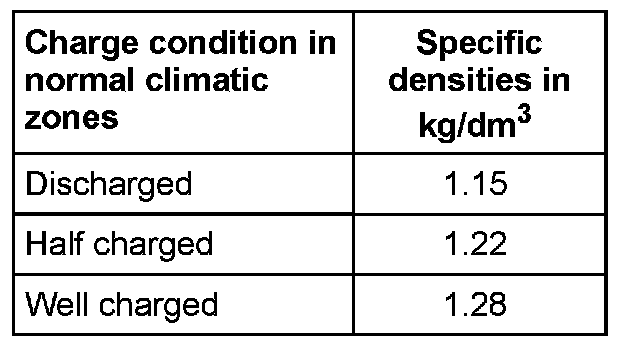
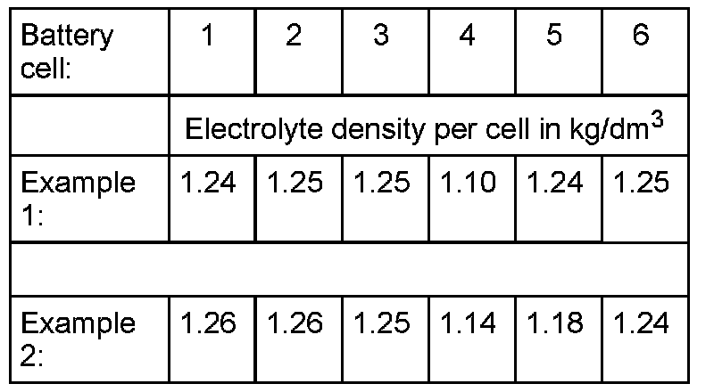

Specific Gravity
Specific gravity, checking
Special tools and equipment

- Commercially available hydrometer
- Cleaning cloths
WARNING!
- When using sulfuric acid it is absolutely necessary that the accident prevention procedures are observed. Suitable protective clothing must be worn.
- When disposing of batteries it is absolutely necessary that the disposal procedures for batteries and sulfuric acid are observed.
The electrolyte specific gravity test in conjunction with the battery load test provides specific information of the battery condition.
The battery acid temperature must be at least 10°C.
The electrolyte density must be checked in all battery cells as follows:
- Switch ignition off.
- Remove all battery plugs (battery cell sealing plugs).

- Immerse end of hydrometer in cell and extract sufficient electrolyte to allow indicator to float freely in the electrolyte.
The denser the extracted electrolyte the higher the indicator floats.
The density in kg/dm3 can be read off the scale of the hydrometer (specific density of electrolyte).
- Read measured value on hydrometer and compare with table:

Electrolyte density must be at least 1.24kg/dm3.
- Charge battery if density is insufficient.
- Repeat density check after charging battery.
Measured value for electrolyte density of individual battery cells must not differentiate more than 0.03 kg/dm3.
Example of unacceptable deviations in electrolyte density:

Example 1: The electrolyte density in cell 4 is too low.
Example 2: The electrolyte density in cells 4 and 5 is too low. The electrolyte density deviations between the battery cells is more than 0.03 kg/dm3
- If the specifications are not obtained, replace battery.
- If the specifications are obtained, screw plugs in again.
It is absolutely necessary to use original sealing plugs in the battery screwed openings to guarantee the battery is sealed correctly.
Use original sealing plugs of same construction if lost or damaged.
The sealing plugs must be installed with an 0- ring.